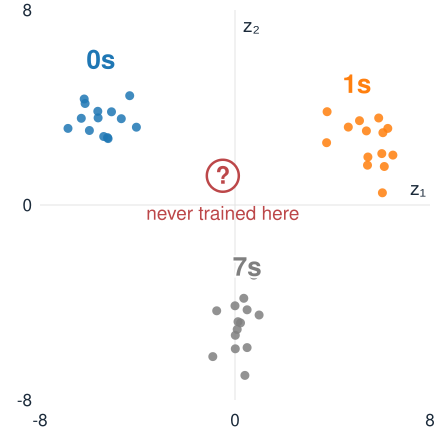
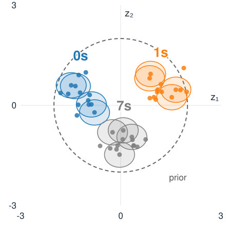
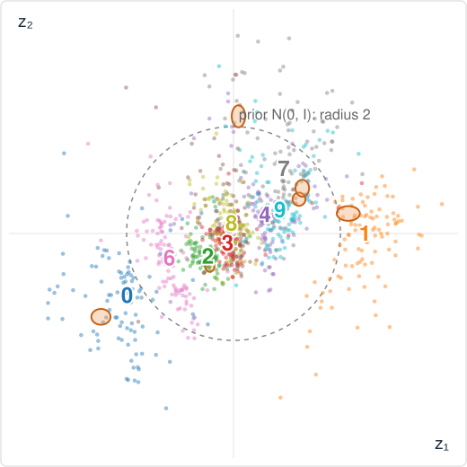
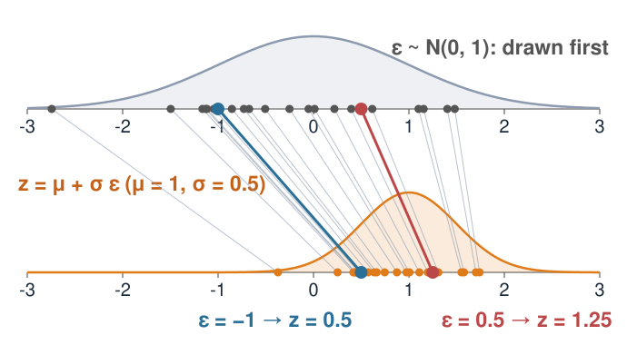
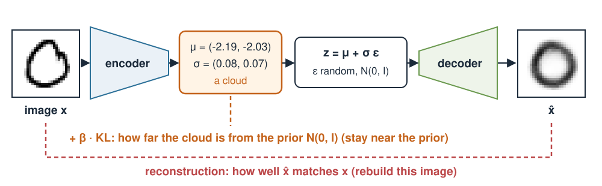
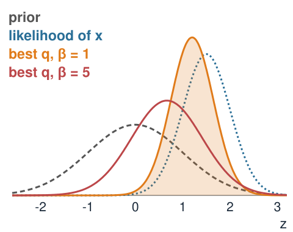

An autoencoder gives every image a point z. A variational autoencoder (VAE) gives every image a small cloud, and keeps all clouds near one standard bell shape.
Why: so that every point of the latent space decodes to a plausible image, and we can generate new ones.
How: the decoder is trained on random draws from each cloud (the reparameterisation trick).
The loss has two parts: rebuild the image + stay close to the standard cloud (a KL divergence).
Slides titled The math give the formulas and proofs; the ideas are complete without them.
A plain autoencoder only has to rebuild its training images. It may place them anywhere in z.
Nothing says what lies between two training images: decode a point in a gap and the result can be anything, often a smudge that is no digit at all.
Nothing says where the images are: to generate a new image, which z should we pick?
Each image is one point, with no notion of how sure the encoder is.
We want: similar images nearby, no gaps, and a known region to draw new z from.

A cloud instead of a point
The encoder outputs, for each image x, a centre\mu(x) and a spread\sigma(x): a Gaussian cloud q(z \mid x) = \mathcal N\big(\mu(x),\ \sigma(x)^2\big).
During training the decoder is handed a random point of the cloud, not the centre, and must still rebuild this image.
So every point near an image must decode to something like it: the space around each image gets trained.
A penalty pulls every cloud towards one standard cloud\mathcal N(0, I), the prior. Clouds overlap, gaps fill.
Two forces: rebuild well (small, separate clouds) against look like the prior (wide, overlapping clouds near 0).

The result on handwritten digits

A VAE with a 2D latent space trained on 60,000 handwritten digits (MNIST). Dots: the cloud centres of 1000 test digits; orange: the clouds (±2 sd) of six test digits.
Digits of one kind sit together; similar digits (4, 9; 3, 5, 8) are neighbours.
Almost everything lies inside the prior’s dashed circle: no big gaps.
The clouds are small (sd about 0.07): the image says a lot about z.
The reparameterisation trick
How do we draw “a random point of the cloud” and still train by walking downhill?
z is now an ordinary formula in \mu and \sigma, so the gradient flows back through it to the encoder.

How far is a cloud from the prior?
The penalty is the Kullback–Leibler divergence\mathrm{KL}(q \,\|\, p): zero when the two distributions are equal, positive otherwise. For a 1D cloud \mathcal N(\mu, s^2) and the prior \mathcal N(0, 1):
\ge 0, with equality only at \mu = 0, s = 1 (since s^2 - 1 - \ln s^2 \ge 0).
Not symmetric: \mathrm{KL}(q\|p) \ne \mathrm{KL}(p\|q) in general.
The VAE loss
For every training image x, with z = \mu(x) + \sigma(x)\,\varepsilon:
\text{loss}(x) = \underbrace{\text{reconstruction error of } \text{decode}(z)}_{\text{rebuild this image}} \;+\; \beta\cdot\underbrace{\mathrm{KL}\big(q(z\mid x)\,\|\,\mathcal N(0, I)\big)}_{\text{stay near the prior}}

Reconstruction: squared pixel error (Gaussian pixel noise), or the cross-entropy when the decoder outputs an “ink probability” per pixel, as for digits.
\beta = 1 is the standard VAE. Larger \beta: tidier latent space, blurrier images. Smaller \beta: sharper, but gaps return.
Encoder and decoder are trained together, downhill on the average loss.
The math: where the loss comes from (ELBO)
Model: z \sim p(z) = \mathcal N(0, I), image x \sim p(x\mid z) (the decoder). We would like to maximise \ln p(x) = \ln\int p(x\mid z)\,p(z)\,dz, but the integral is intractable. For any q(z):
by Jensen’s inequality (\ln is concave). The gap is exactly \mathrm{KL}\big(q(z)\,\|\,p(z\mid x)\big) \ge 0.
Maximising the ELBO over the decoder makes the images likely; over q it makes q approach the posteriorp(z\mid x). The VAE loss is -\text{ELBO} (with \beta = 1).
For \beta = 1 this is exactly the Bayesian posterior of z given x (a product of two Gaussians): here the bound is tight. Larger \beta pulls q towards the prior.

Summary
Idea
In one line
Cloud
the encoder gives each image a centre \mu and a spread \sigma
Reparameterisation
z = \mu + \sigma\varepsilon: randomness first, so gradients flow
Prior
one standard cloud \mathcal N(0, I) that all clouds are pulled towards
KL
\tfrac12(\mu^2 + s^2 - 1 - \ln s^2) per dimension; 0 only for the prior
Loss
reconstruction +\ \beta\cdotKL; \beta = 1 is the standard VAE
Two forces
rebuild well (small, separate clouds) vs. look like the prior (wide, overlapping)
Next: use the trained decoder to generate, interpolate and detect unusual images.